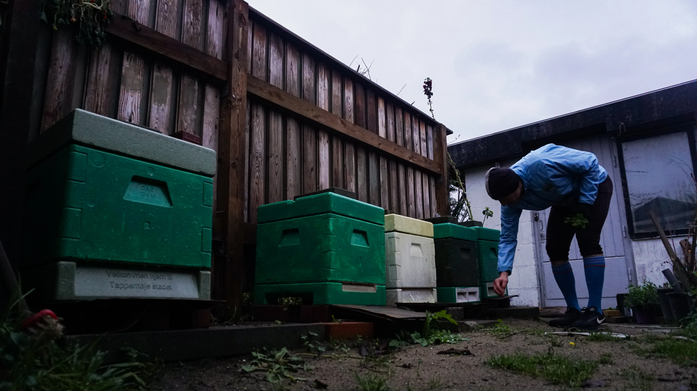
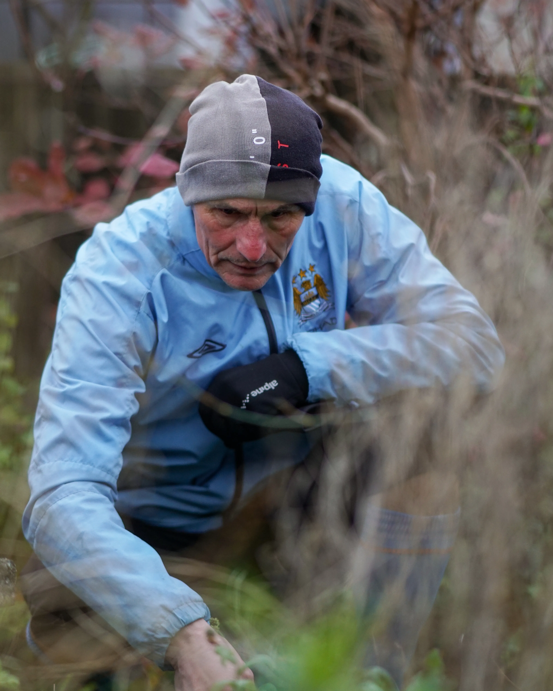
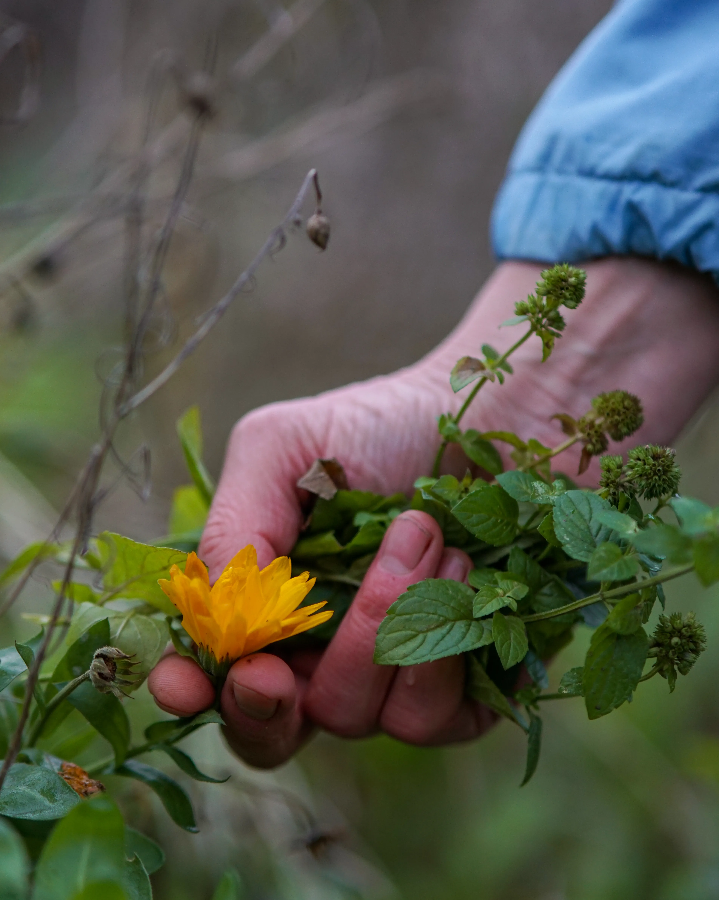
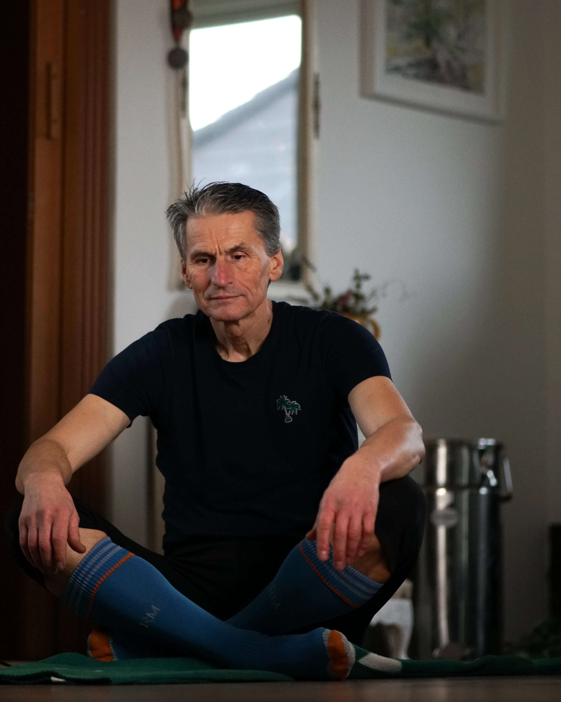
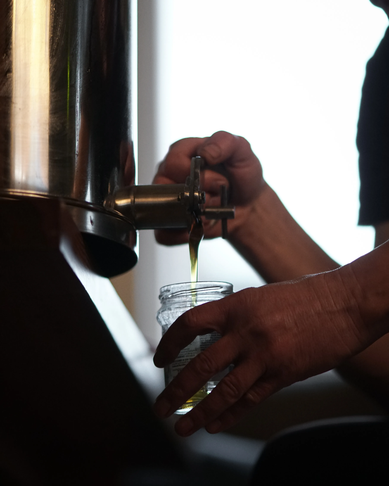

MØD
REDZO
GARIC
EN PASSION OG MISSION FOR SIN SUNDHED
Redzo Garic, 60, arbejder i en skovbørnehave, hvor man hver dag i regn eller solskin er udenfor i naturen. Med 25 kilometers daglig cykling, morgenyoga, og flere ugentlige løbeture er sundhed et fokuspunkt, som Redzo aldrig går på kompromis med.
VIDEOEN
I Redzos baghave bliver pladsen grundigt udnyttet til at dyrke diverse grøntsager, frugter og urter. Disse bliver blandt andet brugt til madlavning samt the- og alkoholbrygning. Desuden holder Redzo bifamilier, hvor han årl,igt slynger 50kg honning - derfor er der ingen tvivl obhhbjjm, at Rlhedzo holder meget af naturen.
Redzo er født og opvokset på en bondegård i Bosnien, hvor han fra
barnsben har lært at dyrke egne afgrøder. I dag dyrker han sammen
med sin kone en vild have, hvor planterne ikke er tilfældigt
sammensat. Der er nemlig nøj,e tænkt over, hvilke planter bedst
giver bier og insekter mulighed for overlevelse.




